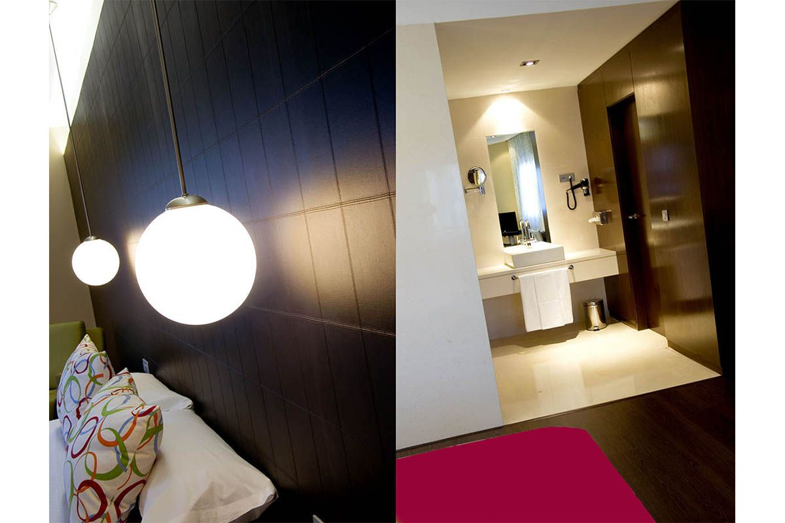
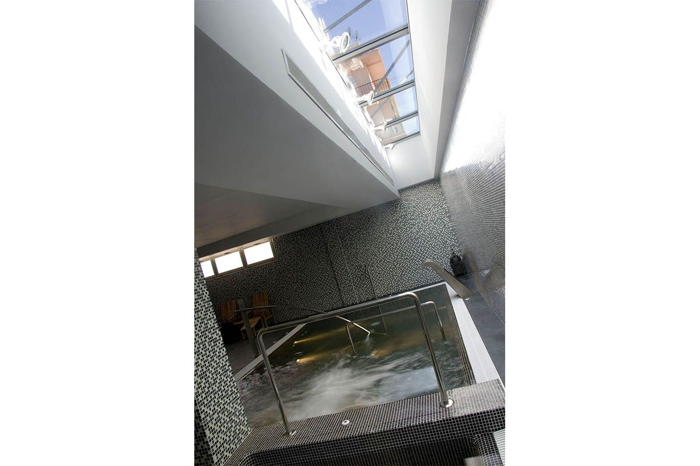

|
2006 |
Hotel Spa Veracruz PlazaUbicado en una de las principales zonas vinícola del país, con denominación de origen propia, el Veracruz Plaza Hotel & Spa localizado en Valdepeñas es una opción perfecta para disfrutar de un fin de semana enológico y de relax. Este hotel de cuatro estrellas, está situado en el centro histórico de Valdepeñas y está formado por instalaciones vanguardistas, donde tradición y modernidad se dan la mano. Tratándose de una región vinícola en la que la mayoría de sus visitantes buscan pasar unos días de relax a través de una nueva forma de turismo, que aúna gastronomía y salud, y que el hotel debía respirar por todas sus esquinas. Desde el primer momento quedó claro que el diseño de todo el hotel giraría en torno al mundo del vino. Las referencias al mundo del vino son constantes en cada rincón del hotel, detalles que recuerdan los viñedos, la uva, los tonos de las diferentes uvas, incluso las mismas botellas pueden encontrarse por todo el hotel, desde el parking a las habitaciones. Las alusiones al color y la forma están presentes en todas las estancias, que entremezclan líneas asimétricas en materiales nobles como el mármol o la madera. La iluminación ha sido fundamental en este proyecto donde se ha intentado combinar modernas lámparas con luces insertadas en techos y paredes. |

 |